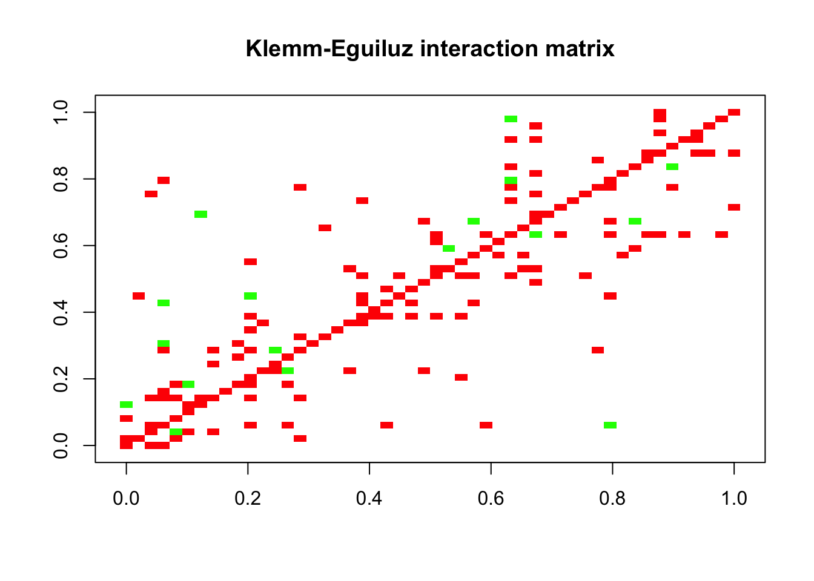
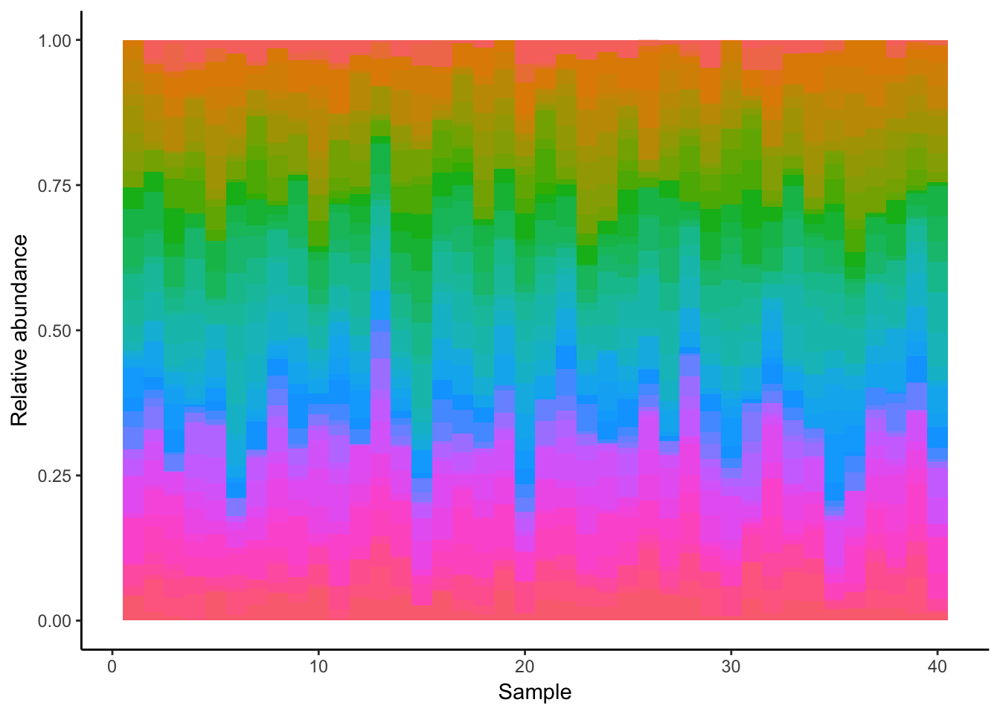

Generating synthetic datasets with seqtime and generalized Lotka-Volterra
Lisa Rottjers
21 december 2017
Start by loading the seqtime library as well as ggplot2. To make plotting easier, we are going to use the ggplot2 package together with reshape2.
library(seqtime)
library(ggplot2)
library(reshape2)We are going to generate a simulated dataset with 50 species, 40 samples. We first need to generate an interaction matrix. We are using the Klemm-Eguiluz algorithm, as this produces modular and scale-free networks.
N = 50
S = 40
A = generateA(N, "klemm", pep=10, c =0.05)## [1] "Adjusting connectance to 0.05"
## [1] "Initial edge number 520"
## [1] "Initial connectance 0.191836734693878"
## [1] "Number of edges removed 348"
## [1] "Final connectance 0.0497959183673469"
## [1] "Final connectance: 0.0497959183673469"
## [1] "Initial edge number 172"
## [1] "Initial connectance 0.0497959183673469"
## [1] "Number of negative edges already present: 50"
## [1] "Converting 105 edges into negative edges"
## [1] "Final connectance: 0.0497959183673469"
## [1] "Final arc number (excluding self-arcs) 122"
## [1] "Final negative arc number (excluding self-arcs) 105"
## [1] "PEP: 13.9344262295082"plotA(A, header="Klemm-Eguiluz interaction matrix")## [1] "Largest value: 0.469801587652357"
## [1] "Smallest value: -0.5"
Normally, we would need to generate initial abundances so we could perform the gLV calculations. The dataset generation function takes care of that, but if you want to have different initial abundances than those generated from the Poisson distribution, you can change the mode parameter.
dataset = generateDataSet(S, A)
dataset = normalize(dataset)
dataset = melt(dataset)
colnames(dataset) = c("Species", "Sample", "Abundance")
ggplot(data=dataset, aes(x=dataset$Sample, y=dataset$Abundance, width=1)) + geom_bar(aes(y = dataset$Abundance, x= dataset$Sample, fill=dataset$Species), data=dataset, stat="identity", show.legend=F) + theme(aspect.ratio=.4) + theme_classic()+ ylab("Relative abundance") + xlab("Sample")
We can also generate the dataset with environmental perturbations. For that, we first generate a suitable environmental matrix. We also tell the dataset function how many samples receive which perturbation. The abundance profile shifts as a result.
env = envGrowthChanges(N, strength=0.8)
dataset = generateDataSet(S, A, env.matrix=env, perturb.count=c(20,20))
dataset = normalize(dataset)
dataset = melt(dataset)
colnames(dataset) = c("Species", "Sample", "Abundance")
ggplot(data=dataset, aes(x=dataset$Sample, y=dataset$Abundance, width=1)) + geom_bar(aes(y = dataset$Abundance, x= dataset$Sample, fill=dataset$Species), data=dataset, stat="identity", show.legend=F) + theme(aspect.ratio=.4) + theme_classic()+ ylab("Relative abundance") + xlab("Sample")